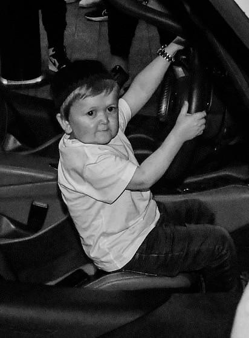
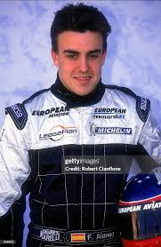
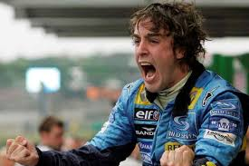
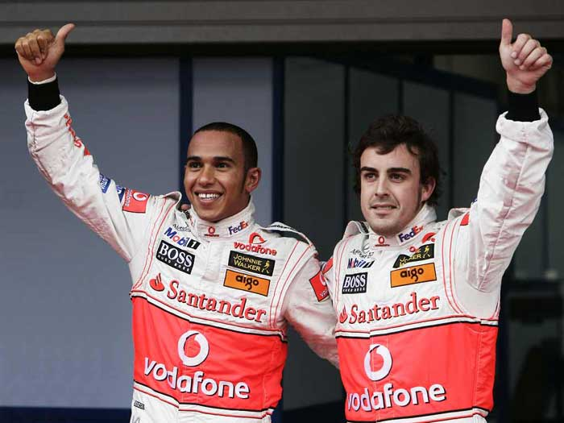
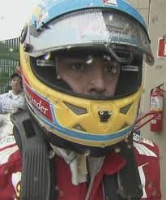
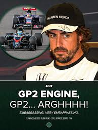
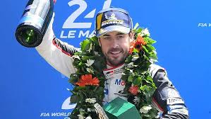
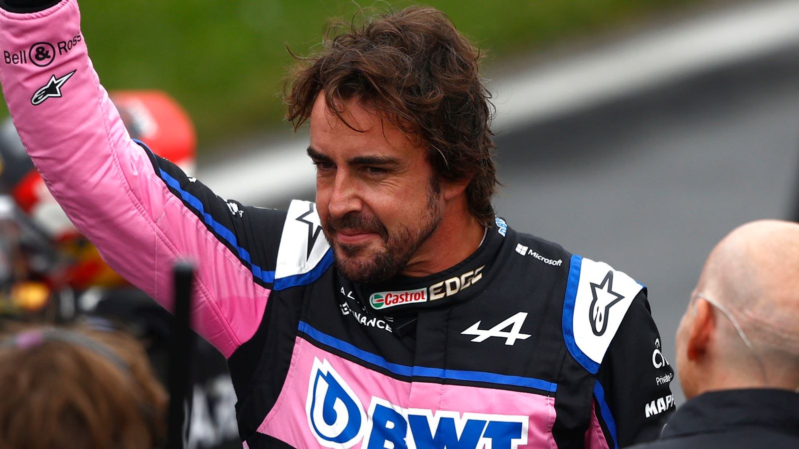
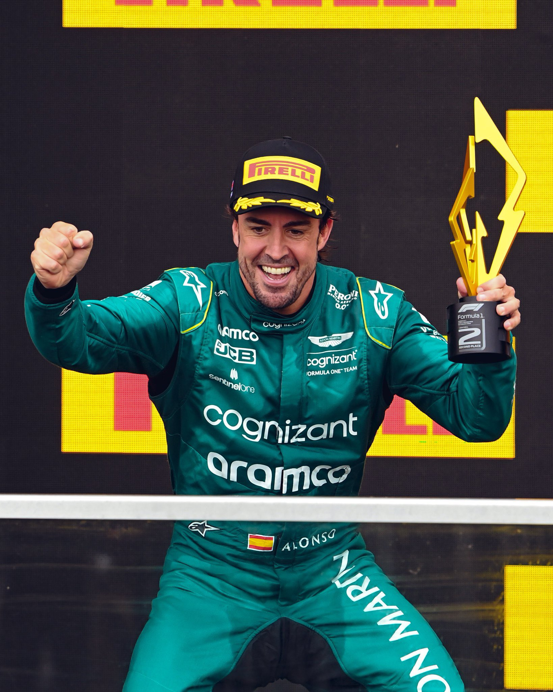
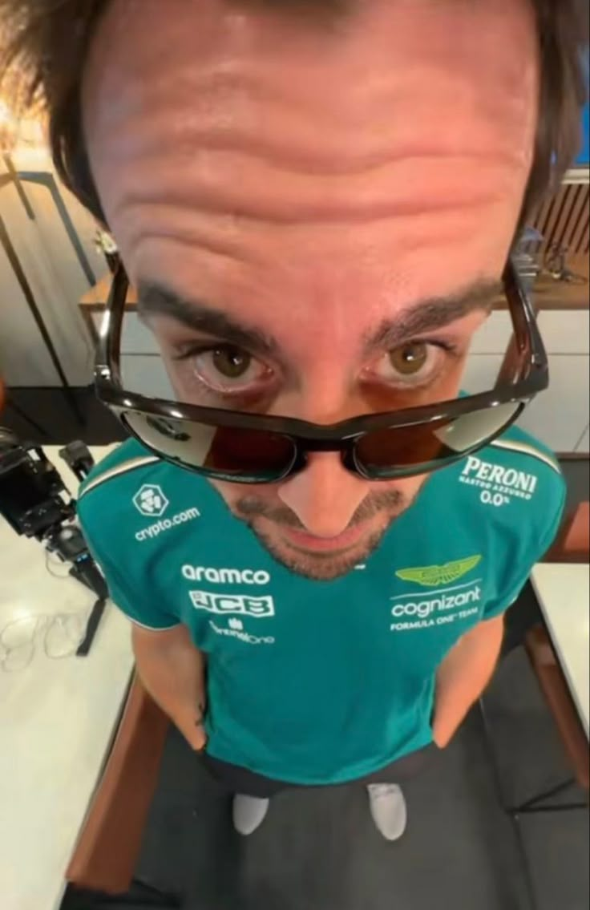

Início da Vida
Fernando Alonso Díaz nasceu em 29 de julho de 1981, na cidade de Oviedo, localizada na região das Astúrias, na Espanha. Desde muito cedo demonstrou uma ligação especial com a velocidade e o automobilismo. Seu primeiro contato com as pistas aconteceu ainda na infância, quando começou a pilotar karts aos três anos de idade. Incentivado por sua família, Alonso rapidamente mostrou talento excepcional, vencendo diversas competições locais e nacionais. Esse início precoce foi fundamental para moldar a carreira de um piloto que, anos depois, se tornaria uma das maiores lendas da Fórmula 1.

Chegada à Fórmula 1
A estreia de Fernando Alonso na Fórmula 1 aconteceu em 2001 pela equipe Minardi. Mesmo com um carro pouco competitivo, ele impressionou especialistas e fãs pela habilidade em extrair o máximo do equipamento. Sua consistência, técnica refinada e capacidade de adaptação chamaram a atenção rapidamente, levando-o à Renault, onde sua carreira ganhou enorme destaque. Sua chegada à categoria marcou o início de uma trajetória brilhante, repleta de disputas históricas e performances memoráveis.

Títulos Mundiais
O grande auge de sua carreira veio em 2005, quando Fernando Alonso conquistou seu primeiro Campeonato Mundial de Fórmula 1 pilotando pela Renault. Naquele ano, ele interrompeu a hegemonia de Michael Schumacher e da Ferrari, tornando-se campeão mundial e entrando definitivamente para a história do esporte. Em 2006, repetiu o feito ao conquistar seu segundo título consecutivo, consolidando-se como um dos maiores talentos de sua geração e um dos pilotos mais respeitados do grid.

McLaren 2007
Em 2007, Fernando Alonso viveu uma das temporadas mais intensas de sua carreira ao se transferir para a McLaren. Naquele ano, dividiu a equipe com o estreante Lewis Hamilton, em uma rivalidade interna que rapidamente se tornou histórica. Alonso conquistou vitórias importantes e lutou pelo campeonato até a última corrida da temporada, terminando empatado em pontos com Hamilton e apenas um ponto atrás do campeão Kimi Räikkönen. Apesar do enorme talento demonstrado, os conflitos dentro da equipe marcaram profundamente essa passagem, tornando 2007 um dos anos mais lembrados de sua trajetória.

Ferrari (2010–2014)
Após passar novamente pela Renault, Alonso chegou à Ferrari em 2010, iniciando um dos períodos mais emblemáticos de sua carreira. Durante cinco temporadas com a equipe italiana, esteve muito próximo do tricampeonato mundial, especialmente em 2010 e 2012, quando levou a disputa pelo título até as últimas corridas. Mesmo sem conquistar o campeonato, suas atuações nesse período são frequentemente consideradas algumas das melhores da história da Fórmula 1, devido à capacidade de competir no mais alto nível mesmo sem o carro mais rápido do grid.

Retorno à McLaren e Saída da F1
Entre 2015 e 2018, Alonso retornou à McLaren, desta vez em uma parceria com a Honda. Essa fase foi bastante difícil, marcada por problemas mecânicos, falta de competitividade e resultados abaixo do esperado. Apesar das dificuldades, Alonso continuou sendo elogiado por sua habilidade e persistência. Ao final de 2018, decidiu se afastar da Fórmula 1, encerrando temporariamente sua trajetória na categoria para buscar novos desafios em outras competições, como o Mundial de Endurance, as 24 Horas de Le Mans e a Indy 500.

Carreira Internacional
Além do sucesso na Fórmula 1, Alonso expandiu sua carreira para outras importantes categorias do automobilismo. Ele conquistou as tradicionais 24 Horas de Le Mans em duas ocasiões, além de vencer as 24 Horas de Daytona. Essas conquistas reforçaram sua reputação como piloto versátil, capaz de competir em diferentes estilos de corrida e manter alto nível de desempenho em qualquer categoria.

Volta à Fórmula 1
Após dois anos longe da categoria, Fernando Alonso retornou à Fórmula 1 em 2021 pela Alpine, equipe sucessora da Renault. Seu retorno foi recebido com grande entusiasmo pelos fãs do automobilismo, e rapidamente ele mostrou que ainda mantinha a mesma qualidade e competitividade que marcaram sua carreira. Durante esse período, voltou a conquistar pódios e reafirmou sua posição como um dos pilotos mais talentosos e experientes da história da categoria.

Aston Martin (Atual)
Desde 2023, Fernando Alonso corre pela Aston Martin, vivendo uma nova fase em sua carreira. Logo em sua primeira temporada com a equipe, voltou a frequentar o pódio e mostrou alto nível de desempenho, mesmo competindo aos 40 e poucos anos. Atualmente, Alonso segue como um dos pilotos mais experientes do grid, liderando o desenvolvimento da equipe e mantendo viva a busca pelo tão sonhado terceiro título mundial. Seu período na Aston Martin reforça ainda mais seu legado como uma lenda viva da Fórmula 1.

Legado
Fernando Alonso é amplamente reconhecido como um dos maiores pilotos da história do automobilismo. Sua inteligência estratégica, habilidade em ultrapassagens e longevidade na Fórmula 1 fazem dele uma referência para novas gerações. Seu legado vai além dos títulos: ele representa perseverança, talento e paixão pelo esporte, inspirando milhões de fãs ao redor do mundo.
